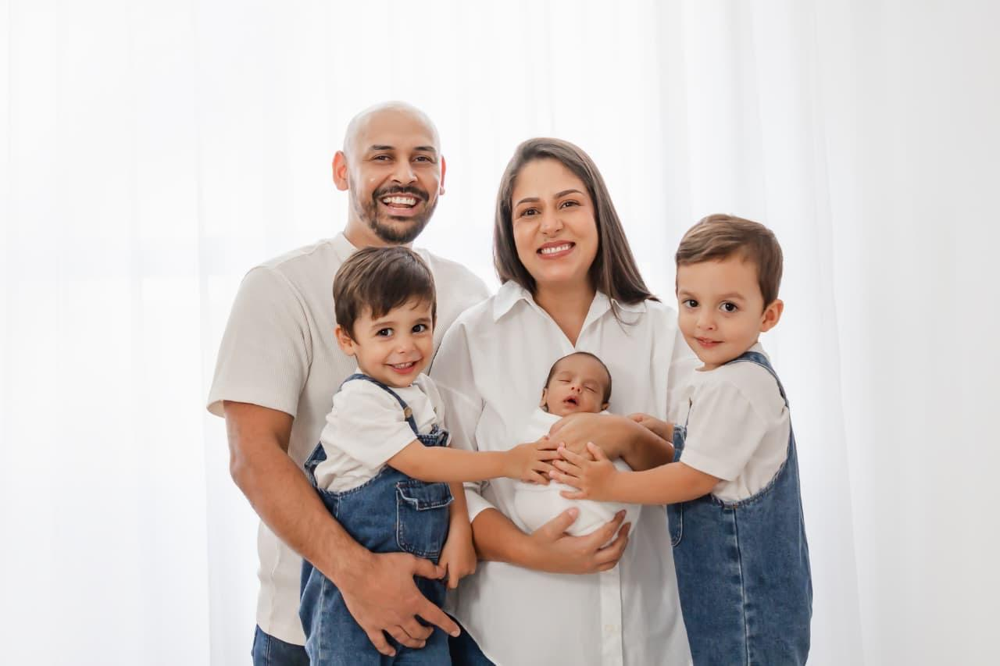
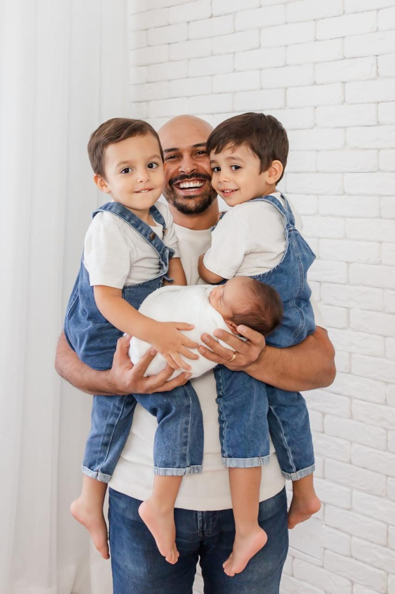

A Visita
Um café, um pacote de fraldas e uma oração.
Conhece uma família que acabou de ter um bebê? A gente aparece, ouve e ora pela casa. Meia hora, sem sermão.
Indicar uma famíliaHá 10 anos eu e a Gabi estamos construindo uma família: três filhos, muitas madrugadas e uma fé que a gente não negocia. Aqui eu divido o que vou aprendendo, de um jeito simples, para qualquer pessoa que quer um lar mais leve e mais firme.
“Se o Senhor não edificar a casa, em vão trabalham os que a edificam.”Salmos 127:1

“Filhos são herança do Senhor.”
Salmos 127:3Você não precisa ser cristão para puxar uma cadeira aqui. Seja da igreja há anos, esteja afastado ou nunca tenha aberto uma Bíblia, esta mesa é sua também.
Eu falo de Deus porque foi Ele quem mudou a minha casa. E você é livre para tirar as suas próprias conclusões.
Comece pelos 5 minutos de hoje
Nada de fórmula. Só o que a vida em casa ensinou.
“Que todas estas palavras que hoje lhe ordeno estejam em seu coração. Ensine-as com persistência a seus filhos. Converse sobre elas quando estiver sentado em casa, quando estiver andando pelo caminho, quando se deitar e quando se levantar.”Deuteronômio 6:6–7
Repare na ordem: primeiro no seu coração, depois nos seus filhos. Deus não começa pedindo que a gente ensine. Começa pedindo que a gente viva.
E a sala de aula não é um púlpito. É a casa, o caminho, a hora de deitar e a hora de levantar. A rotina comum é onde a fé passa de uma geração para a outra.
Seu filho não vai lembrar da maioria das coisas que você disse. Vai lembrar de como você tratava a mãe dele, de como reagia no trânsito e de como orava quando as coisas davam errado.
Escolha um momento da rotina, como o caminho da escola, o banho ou a hora de dormir, e fale de Deus ali, em uma frase simples.
Senhor, que a minha vida ensine antes das minhas palavras. Planta a tua Palavra primeiro em mim. Amém.
“Sejam bondosos e compassivos uns para com os outros, perdoando-se mutuamente, assim como Deus os perdoou em Cristo.”Efésios 4:32
O versículo termina com o motivo: “assim como Deus os perdoou”. A gente perdoa porque foi perdoado primeiro. Ninguém dá o que nunca recebeu.
Em casa, o orgulho costuma se disfarçar de autoridade: “eu sou o pai, não preciso pedir desculpa”. Mas autoridade de verdade não tem medo de reconhecer um erro.
Quando um pai pede perdão, ele mostra ao filho como é o coração de Deus: alguém que não esconde o erro, mas também não deixa o erro ter a última palavra.
Existe alguém em casa a quem você deve um pedido de desculpa? Não espere a hora perfeita. Faça hoje, olhando nos olhos.
Pai, obrigado por me perdoar tantas vezes. Me dá humildade para pedir perdão e graça para perdoar. Amém.
“Um homem sozinho pode ser vencido, mas dois conseguem defender-se. Um cordão de três dobras não se rompe com facilidade.”Eclesiastes 4:12
Filhos não precisam de pais perfeitos. Precisam de pais que estão do mesmo lado. Uma criança se sente segura quando percebe que o pai e a mãe se amam e se respeitam.
Com a chegada dos filhos, o casamento vai fácil para o fim da fila: primeiro as crianças, depois o trabalho, depois a casa. O casal fica com o que sobra, e o que sobra quase sempre é cansaço.
O cordão tem três dobras: marido, esposa e Deus. Cuidar dessa terceira dobra, orando juntos e lembrando por que começaram, é o que segura as outras duas nos dias difíceis.
Mande uma mensagem para quem está ao seu lado agradecendo uma coisa específica que essa pessoa fez esta semana.
Senhor, sê o centro do nosso casamento. Que nossos filhos cresçam vendo um amor que aponta para ti. Amém.
“Venham a mim, todos os que estão cansados e sobrecarregados, e eu lhes darei descanso.”Mateus 11:28
Jesus não disse “venham a mim os que estão dando conta”. O convite é para os cansados. Se você está exausto, está exatamente no público certo.
Criar filhos mostra nossos limites rápido: o sono, a paciência, o dinheiro, a fé. Limite não é fracasso. É um lembrete de que fomos feitos para depender.
E Deus também cuida de nós por meio de gente: a avó que fica com as crianças, o amigo que traz o almoço, a igreja que ora. Aceitar ajuda também é fé.
Peça ajuda a uma pessoa, em uma coisa concreta. Depois separe cinco minutos de silêncio para entregar a Deus o que está pesando.
Jesus, eu estou cansado. Venho do jeito que estou. Me dá o teu descanso e me ensina a não carregar tudo sozinho. Amém.
Um café, uma palavra e cinco minutos. Para ler antes que o bebê acorde ou que apareça a próxima tarefa.
Três jeitos simples de caminharmos juntos. Gente cuidando de gente.
Um café, um pacote de fraldas e uma oração.
Conhece uma família que acabou de ter um bebê? A gente aparece, ouve e ora pela casa. Meia hora, sem sermão.
Indicar uma família30 minutos para se abrir, desabafar, sorrir ou receber uma palavra.
Online ou presencial, de segunda a sexta, das 20h às 22h. Você conta o que está no coração e escolhe o horário.
Agendar um horárioPais abençoando os filhos, em voz alta.
Um encontro para igrejas e grupos em que pais e mães colocam a mão na cabeça dos filhos e os abençoam.
Levar para o meu grupoEu vou até a sua mesa, por vídeo ou pessoalmente, com um café e tempo de verdade. Para você se abrir, desabafar, sorrir ou receber uma palavra pensada para o seu momento.
O Denny confirma pelo WhatsApp. Para agilizar, mande o pedido por lá também:
Enviar no WhatsAppDúvida, desabafo ou uma pequena vitória? Levante a mão. Outros pais e mães respondem.
Enquanto a conversa entre pais não abre, mande sua dúvida direto para o Denny.
Perguntar no WhatsApp“Puxe uma cadeira e comece a conversa. A primeira pergunta é sempre a mais corajosa.”
Sabe quando alguém pergunta na mesa do almoço “você conhece um bom pediatra?”. Estas são as nossas respostas: profissionais que já cuidaram bem da nossa casa.
Conhece alguém que cuidou bem da sua família? Conte pra gente. Depois de conversar com a pessoa, a gente pode colocar na mesa.
Indicar alguémIndicação de amigo, não é propaganda paga. Confira sempre o registro profissional (CRM, CRP, CRFa…) e escolha com calma o que é melhor para a sua família.
Marido da Gabi há 7 anos e pai de gêmeos de 3 anos e de um bebê de 3 meses. Trabalho na área comercial, sirvo na igreja local e, desde os 15 anos, caminho perto de pessoas.
Não sou especialista em família perfeita. Sou um pai aprendendo todo dia, com a Bíblia aberta e muito café. O que escrevo aqui é o que a gente vive em casa.
“Não escrevo para pais perfeitos. Escrevo para pais reais, que amam, cansam, erram e querem enxergar Deus nas madrugadas.”
Teologia · Liderança (Florida Christian University) · Pós em Gestão de Pessoas
Uma dúvida, um convite para falar na sua igreja ou só vontade de trocar uma ideia. Respondo pelo WhatsApp.
(81) 99270-2353O devocional de 5 minutos, para ler antes de o dia começar. Sem spam, e você sai quando quiser.
Para garantir os devocionais no WhatsApp, mande um “oi” e salve o número na sua agenda.
Confirmar no WhatsAppInstale como aplicativo: abre em tela cheia, fica na tela inicial e você recebe o devocional de quarta num toque.